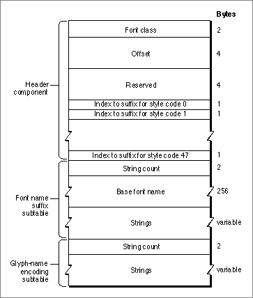

Legacy Document
Important: The information in this document is obsolete and should not be used for new development.
Important: The information in this document is obsolete and should not be used for new development.


The Style-Mapping Table
The printer driver uses font classes to differentiate among the different methods of implementing font styles. The style-mapping table provides a flexible way to assign font classes and to specify character-set encodings. The table contains the font class, information about the character-encoding scheme that the font designer used, and a mechanism for obtaining the name of the appropriate printer font. The style-mapping table is primarily used by drivers for high-resolution printers such as the LaserWriter.The font name suffix subtable and the glyph-encoding subtable that are part of the style-mapping table immediately follow it in the resource data. The font name suffix subtable contains the base font name and the suffixes that can be added to the font family's name to produce a real PostScript name (one that is recognized by the PostScript LaserWriter printer driver). The style-mapping table uses the suffix table to build a font name for a PostScript printer. The glyph-encoding table allows character codes to be mapped to PostScript glyph names. Figure 4-28 shows the structure of the style-mapping table.
Figure 4-28 The style-mapping table
 The header component of the style-mapping table contains a list of indexes into the font name suffix subtable, which is described below. The style-mapping table is represented by the
StyleTabledata type, which is shown on page 4-44. The elements of this table are as follows.
- Font class. An integer value that specifies a collection of flags that alert the printer driver to what type of PostScript font this font family is. This value is represented by the
fontClassfield of theStyleTabledata type. For more information about how these flags are used, see the LaserWriter Reference book.The default font class definition is 0, which has settings that indicate the printer driver should derive the bold, italic, condense, and extend styles from the plain font. Intrinsic fonts are assigned classes (bits 2 through 8) that prevent these derivations from occurring. The meanings of the 16 bits of the
fontClassword are as follows:
Bit Meaning 0 This bit is set to 1 if the font name needs coordinating. 1 This bit is set to 1 if the Macintosh vector reencoding scheme is required. Some glyphs in the Apple character set, such as the Apple glyph, do not occur in the standard Adobe character set. This glyph must be mapped in from a font that has it, such as the Symbol font, to a font that does not, like Helvetica. 2 This bit is set to 1 if the font family creates the outline style by changing PaintType, a PostScript variable, to 2. 3 This bit is set to 1 if the font family disallows simulating the outline style by smearing the glyph and whiting out the middle. 4 This bit is set to 1 if the font family does not allow simulation of the bold style by smearing the glyphs. 5 This bit is set to 1 if the font family simulates the bold style by increasing point size. 6 This bit is set to 1 if the font family disallows simulating the italic style. 7 This bit is set to 1 if the font family disallows automatic simulation of the condense style. 8 This bit is set to 1 if the font family disallows automatic simulation of the extend style. 9 This bit is set to 1 if the font family requires reencoding other than Macintosh vector encoding, in which case the glyph-encoding table is present. 10 This bit is set to 1 if the font family should have no additional intercharacter spacing other than the space character. 11-15 Reserved. Should be set to 0. - Offset. A long integer value that specifies the offset from the start of this table to the glyph-encoding subtable component. This value is represented by the
offsetfield of theStyleTabledata type.- Reserved. A long integer element reserved for use by Apple Computer, Inc.
- Index to font name suffix subtable. This is an array of 48 integer index values, each of which is a location in the naming table. The value of the first element is an index into the naming table for the string name for style code 0; the value of the forty-eighth element is an index into the naming table for the string name for style code 47. This array is represented by the
indexesfield of theStyleTabledata type.
The Font Name Suffix Subtable
The font name suffix subtable is part of the style-mapping table. This subtable contains the base font name and the suffixes that can be added to the font family's name to produce a real PostScript name (that is, one that is recognized by the PostScript printer driver). This subtable is represented by theNameTabledata type, which is described on page 4-44. It consists of the following elements:
Each of the strings in the string list contains a sequence of one-byte values, the first of which specifies how many other bytes follow, and each of the following contains an index value. To form the complete name of a font, the base name is concatenated with each of the strings whose index is in the string.
- String count. An integer value that specifies the number of strings in the array of suffixes. This value is represented by the
stringCountfield of theNameTabledata type.- Base font name. The font family name in a 256 byte long Pascal string. This value is represented by the
baseFontNamefield of theNameTabledata type.- Strings. A variable length array of Pascal strings, each of which contains the suffixes or numbers specifying which suffixes to put together to produce the real PostScript name. This array is represented by the
stringsfield of theNameTabledata type. This section describes the format of these strings and provides an example of using this subtable.
For an example of how this table works, consider the PostScript name of the bold-italic version of the font ExampleFont. Here are the strings of the font name suffix subtable for this font:
Index Contents 1 'ExampleFont' 2 $02 $09 $0A 3 $02 $09 $0B 4 $03 $09 $0A $0B 5 $02 $09 $0C 6 $04 $09 $0C $09 $0A 7 $04 $09 $0C $09 $0B 8 $05 $09 $0C $09 $0A $0B 9 - 10 'Bold' 11 'Oblique' 12 'Narrow' QuickDraw has assigned the bold-italic style the number $03; since the base font name is the first entry in this array, you need to access the entry at i+1, where i is the style value. So, for the bold-italic style, you look at the fourth string. The first byte in this string is $03, which indicates that three string indexes follow.
By concatenating them together with the base font name, you produce the font name string "ExampleFont-BoldOblique". If the LaserWriter printer driver cannot find the font on the printer, it looks for the font: in version 7.1 and later of system software, the driver looks in the "Fonts" folder; in earlier versions of system software, it first looks in the folder where the driver code is located, then in the System Folder. If the font is there, the driver sends it to the printer. If it is not, the driver sends a QuickDraw bitmap that has already been scaled to the correct size.
- The first index is $09, which produces the string
'-'.- The second index is $0A, which produces the string
'Bold'.- The third index is $0B, which produces the string
'Oblique'.
Listing 4-4 provides a function for using the style table to build a full PostScript font name.
Listing 4-4 Using the style-mapping table to build a PostScript font name
TYPE IntegerPtr = ^Integer; FamRecPtr = ^FamRec; FamRecHdl = ^FamRecPtr; StyleTablePtr = ^StyleTable; FUNCTION MyCompressStyle (aStyle: Style): Integer; {A "Set of StyleItem" is mapped into [0..47],} {assuming that condense and extend are mutually exclusive} VAR styleCode: Integer; BEGIN styleCode := 0; IF bold IN aStyle THEN styleCode := styleCode + 1; IF italic IN aStyle THEN styleCode := styleCode + 2; IF outline IN aStyle THEN styleCode := styleCode + 4; IF shadow IN aStyle THEN styleCode := styleCode + 8; IF condense IN aStyle THEN styleCode := styleCode + 16 ELSE IF extend IN aStyle THEN styleCode := styleCode + 32; MyCompressStyle := styleCode; END; FUNCTION MyNthStyleName (index: Integer; q: Ptr): Str255; VAR s: Str255; BEGIN WHILE index > 1 DO BEGIN q := Ptr(ord(q) + q^ + 1); { assumes q^ = stringlength < 128 ...} index := index - 1; END; BlockMove(q, @s[0], q^ + 1); { assumes q^ = stringlength < 127 ...} MyNthStyleName := s; END; FUNCTION MyPSFontName(fh: FamRecHdl; aStyle: Style): Str255; VAR stp: StyleTablePtr; q: Ptr; { pointer to Style-name table. } { This is not a Pascal structure. } PSName, suffixIndices: Str255; i, nbOfStrings, offset, whichIndex: Integer; BEGIN PSName := ''; offset := fh^^.ffStylOff; IF offset > 0 THEN BEGIN stp := StyleTablePtr(ord(fh^) + offset); q := Ptr(ord(stp) + SizeOf(StyleTable)); { style-name table follows style-mappingTable} nbOfStrings := IntegerPtr(q)^; { for range checking below } q := Ptr(ord(q) + 2); { now pointing to basename of font } BlockMove(q, @PSName, q^ + 1); { basename of font; assumes length < 128 } whichIndex := stp^.indexes[MyCompressStyle(aStyle)]; IF (whichIndex > 1) AND (whichIndex <= nbOfStrings) THEN BEGIN suffixIndices := MyNthStyleName(whichIndex, q); FOR i := 1 TO ord(suffixIndices[0]) DO PSName := concat(PSName, MyNthStyleName(ord(suffixIndices[i]), q)); END ELSE { corrupted FOND }; END ELSE { no style mapping table in FOND }; MyBuildPSFontName := PSName; END;The Glyph-Name Encoding Subtable
The glyph-name encoding subtable of the style-mapping table allows the font family designer to map 8-bit character codes to PostScript glyph names. This subtable is required when the font family character set is not the Standard Roman character set or the standard Adobe character set. Each entry in this table is a Pascal string, the first byte of which is the character code that is being mapped, and the remaining bytes of which specify the PostScript glyph name.There is no data type defined to represent the glyph-encoding subtable. The elements of this subtable are as follows:
The following example demonstrates the use of an encoding table in a font resource:
- String count. An integer value that specifies the number of entries in the encoding subtable.
- Strings. A variable length array of Pascal strings. The first byte of each string is an eight-bit character code, and the remaining bytes are the name of a PostScript glyph. This section beginning on page 4-98, provides an example of using this table.
Byte sequence Use $0002 The number of entries in this encoding table. $A8 The character code of the first character that is being remapped. 'diamond' The name of the PostScript character to be used for character code $A8. $A9 The character code of the second (and last) character that is being remapped. 'heart' The name of the PostScript character to be used for character code $A9. The effect of this table is to assign the PostScript character named diamond to the character code $A8 and to assign the PostScript character named heart to the character code $A9. If either of these character codes has a character assigned to it in the font, that character is replaced by the PostScript character named in the table.
For more information about the font name suffix subtable and the glyph-name encoding table, please see the LaserWriter Reference.